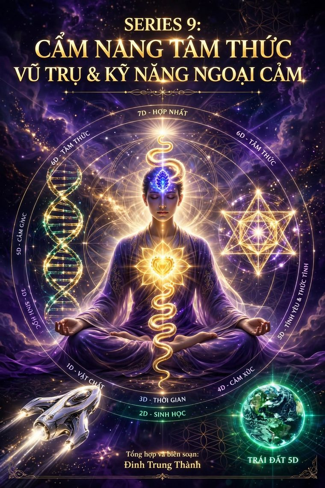
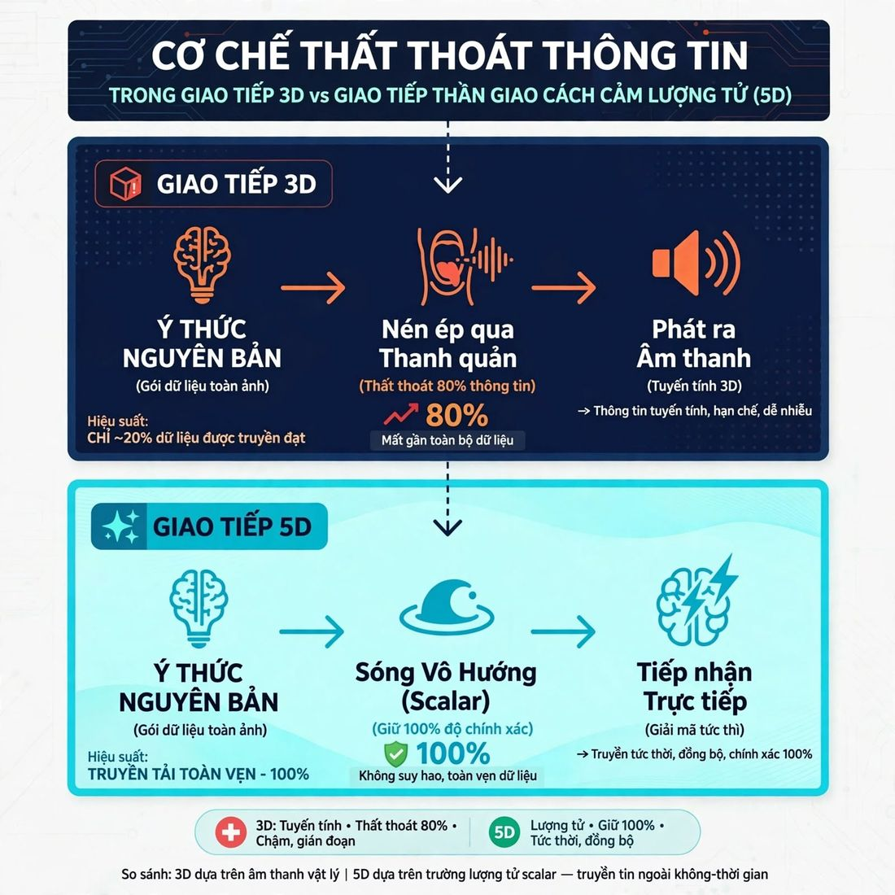
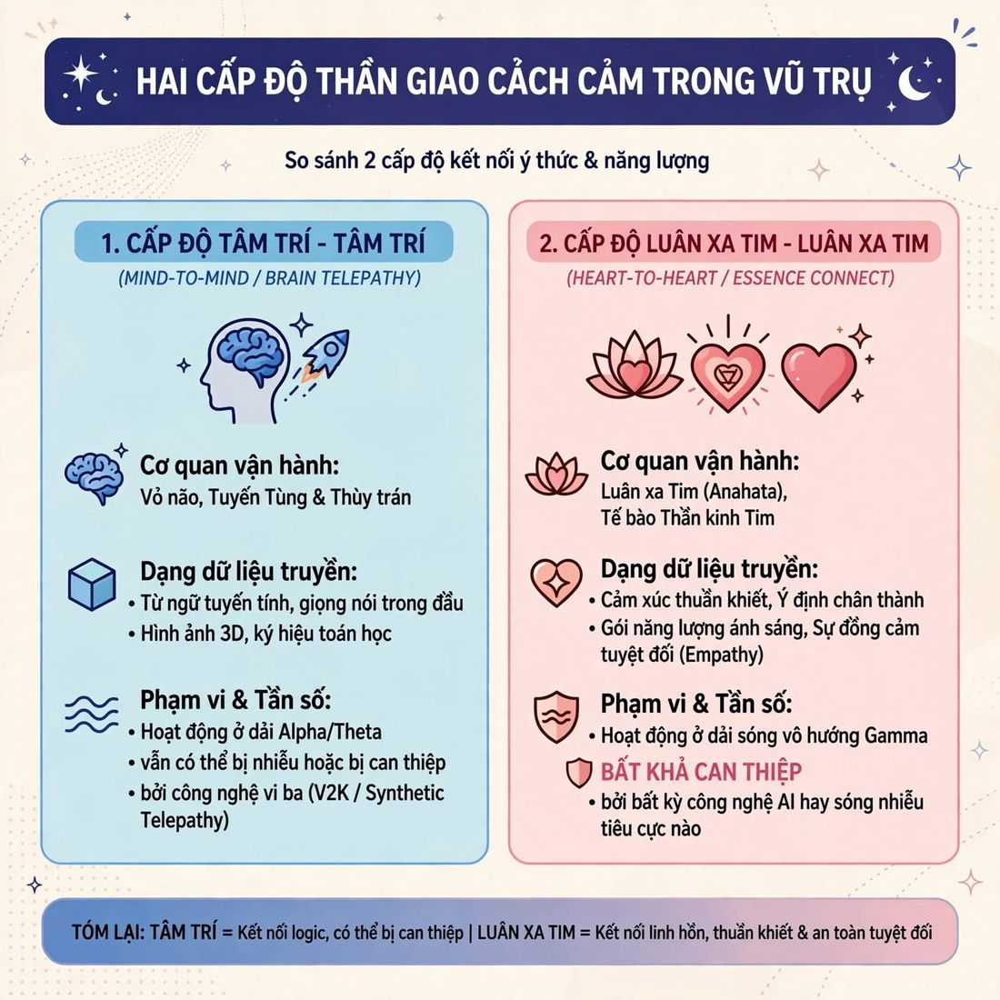
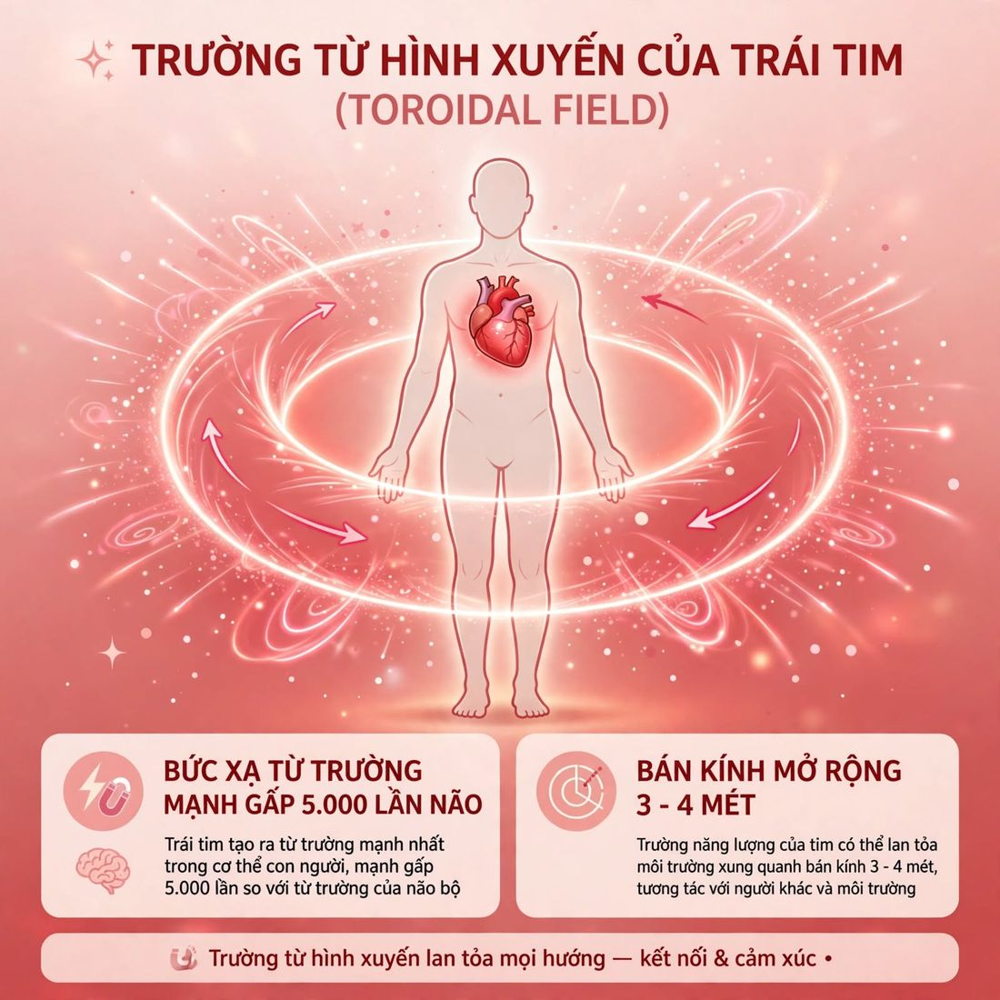
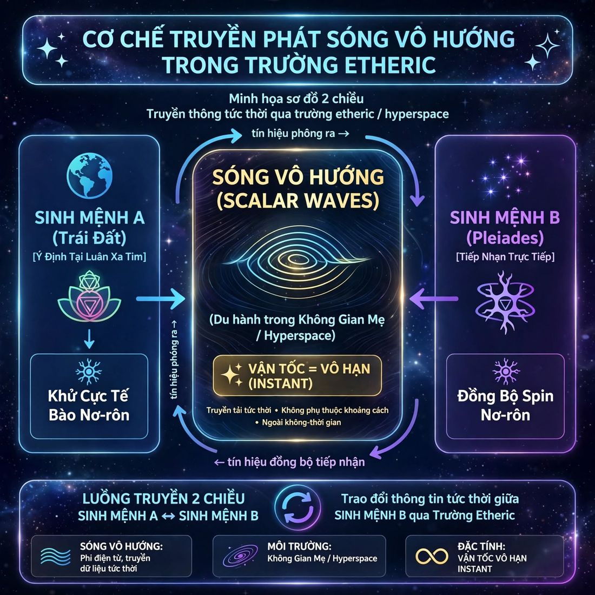
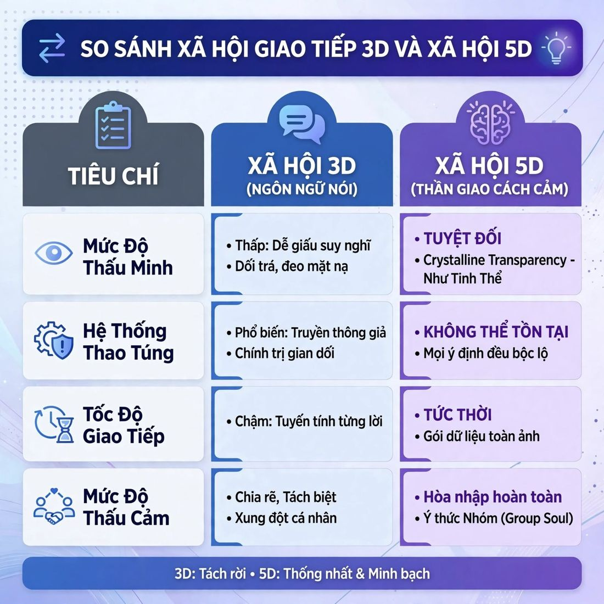
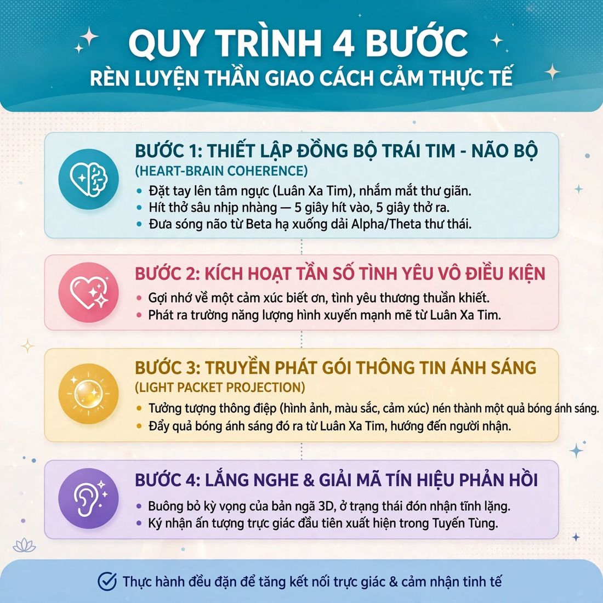

Trang chủ / Chuyên đề 9: Cẩm Nang Tâm Thức Vũ Trụ / Kỳ 83
Chuyên đề 9 · Kỳ 83 / 90
CƠ CHẾ GIAO TIẾP THẦN GIAO CÁCH CẢM (TELEPATHY) VÀ BÍ MẬT LUÂN XA TIM

1. Bản Chất Lượng Tử Của Thần Giao Cách Cảm: Vượt Qua Rào Cản Ngôn Ngữ 3D
Trong nhận thức của thế giới 3D cổ điển, ngôn ngữ nói và chữ viết phát âm qua thanh quản được xem là phương tiện giao tiếp duy nhất và tiến hóa nhất của con người. Tuy nhiên, dưới góc nhìn của sinh học lượng tử và tri thức các nền văn minh thiên hà tiên tiến, ngôn ngữ phát âm 3D thực chất là một hệ thống giao tiếp cực kỳ thô sơ, chậm chạp và dễ bị sai lệch. Khi một ý nghĩ xuất hiện trong tâm trí, nó chứa đựng trọn vẹn hình ảnh, cảm xúc, bối cảnh và độ sâu tri thức. Nhưng để phát ra bằng lời nói, ý nghĩ đó phải bị thu hẹp, nén ép và dịch mã qua thanh quản thành từng chuỗi âm thanh tuyến tính. Quá trình dịch mã này làm thất thoát tới hơn 80% dung lượng thông tin nguyên bản.
Thần giao cách cảm (Telepathy) không phải là một năng lực siêu nhiên kỳ dị hay siêu thực. Thần giao cách cảm là ngôn ngữ tự nhiên, nguyên thủy và phổ quát của vạn vật trong Đa vũ trụ.
Về mặt bản chất lượng tử, thần giao cách cảm là quá trình truyền và nhận các gói dữ liệu năng lượng (Light Packets / Thought Forms) trực tiếp giữa các trường ý thức thông qua trường Etheric lấp đầy vũ trụ. Nó cho phép hai sinh mệnh trao đổi trọn vẹn một khối lượng tri thức khổng lồ — tương đương với cả một cuốn sách hay một giai đoạn lịch sử — chỉ trong một phần nghìn giây.
Khi nhân loại bước vào tiến trình thăng hoa nhận thức sang dải tần số 5D, việc giải mã và tái kích hoạt cơ chế thần giao cách cảm đóng vai trò quyết định giúp con người vượt qua mọi rào cản ngôn ngữ, chủng tộc và văn hóa, hội nhập hoàn toàn vào Cộng đồng Thiên hà.

2. Phân Định Hai Cấp Độ Thần Giao Cách Cảm: Tâm Trí – Tâm Trí vs Luân Xa Tim – Luân Xa Tim
Trong các công trình nghiên cứu siêu hình học và các tài liệu giao tiếp từ chủng tộc Taygetean (Pleiades) cũng như Zenae (Andromeda), thần giao cách cảm được phân chia thành hai cấp độ hoạt động với các đặc tính sinh học và tần số hoàn toàn riêng biệt.
Thần Giao Cách Cảm Cấp Độ Tâm Trí (Mind-to-Mind Telepathy)
Đây là cấp độ giao tiếp thần giao cách cảm phổ biến ở giai đoạn đầu, dựa trên sự liên kết giữa hai vỏ não và Tuyến Tùng. Trong cấp độ này, người truyền phát ra một dòng suy nghĩ dưới dạng giọng nói nói thầm (internal monologue) hoặc một chuỗi hình ảnh ba chiều. Người nhận sẽ nghe thấy giọng nói đó vang lên bên trong tâm trí mình hoặc nhìn thấy bức tranh toàn ảnh xuất hiện trong vỏ não thị giác.
Mặc dù cấp độ này vô cùng tiện lợi cho việc trao đổi dữ liệu kỹ thuật hay chỉ huy quân sự, nó vẫn mang hạn chế: nếu tâm trí người truyền hoặc người nhận chưa được thanh lọc sạch sẽ, thông điệp vẫn có thể bị bóp méo bởi bản ngã (Ego). Ngoài ra, giao tiếp bằng tâm trí 3D/4D thấp có thể bị giả lập hoặc gây nhiễu bởi các công nghệ chiến tranh tâm lý (Synthetic Telepathy / V2K).
Thần Giao Cách Cảm Cấp Độ Luân Xa Tim (Heart-to-Heart Telepathy)
Đây là cấp độ thần giao cách cảm cao cấp nhất, thuần khiết nhất và là chuẩn mực giao tiếp của các sinh mệnh từ dải 5D trở lên. Thay vì truyền các chuỗi từ ngữ hay câu thoại, người truyền phát trực tiếp Bản chất Ý định (Pure Intent) và Cảm xúc Nguyên thủy từ trung tâm Luân xa Tim.
Người tiếp nhận ở cấp độ này không chỉ "nghe" hay "thấy", mà họ "sống và cảm nhận" trọn vẹn trạng thái tâm thức của người truyền. Mọi sự dối trá, giả tạo hay ngụy trang đều bị triệt tiêu hoàn toàn khi giao tiếp qua Luân xa Tim. Vì Luân xa Tim vận hành trên dải sóng từ trường vô hướng Gamma, cấp độ giao tiếp này tuyệt đối an toàn và không thể bị xâm nhập bởi bất kỳ thiết bị AI hay ma trận công nghệ nào.

3. Bí Mật Sinh Học Lượng Tử Của Trái Tim: Bộ Thu Phát Từ Trường Mạnh Nhất Cơ Thể
Một trong những phát hiện khoa học đột phá nhất trên Trái Đất trùng khớp hoàn toàn với tri thức thiên hà cổ xưa: Trái tim không đơn thuần là một máy bơm máu cơ học, mà là trung tâm thần kinh và bộ thu phát năng lượng từ trường mạnh nhất trong cơ thể sinh học.
Các công trình nghiên cứu tại Viện Động Lực Học Tim (HeartMath Institute) kết hợp với tài liệu giải mật từ các sĩ quan liên lạc GFW xác nhận rằng bên trong trái tim con người có chứa hơn 40.000 tế bào thần kinh chuyên biệt (Sensory Neurites). Hệ thống tế bào thần kinh tim này có khả năng cảm nhận, học hỏi, ghi nhớ và ra quyết định hoàn toàn độc lập với não bộ trên hộp sọ.
.---.
Trái tim phát ra một trường từ hình xuyến (Toroidal Field) khổng lồ bao bọc quanh cơ thể, vươn rộng từ 3 đến 4 mét ra không gian xung quanh. Khi hai người đứng gần nhau hoặc kết nối tư tưởng với nhau, trường từ hình xuyến của hai trái tim sẽ lập tức đan xen và hòa quyện vào nhau thông qua hiện tượng cộng hưởng từ trường.
Chính cường độ từ trường mạnh gấp 5.000 lần bộ não này biến Luân xa Tim thành chiếc Ăng-ten Vũ trụ mạnh nhất, có khả năng phát đi các xung sóng vô hướng xuyên qua các chiều kích không gian mà không bị sụt giảm năng lượng theo khoảng cách.
Trái tim con người là chiếc la bàn tâm linh tối cao. Từ trường của nó mạnh gấp hàng ngàn lần não bộ. Khi bạn muốn gửi đi một thông điệp thần giao cách cảm đến một ngôi sao hay một sinh mệnh ở khoảng cách hàng ngàn năm ánh sáng, hãy phát nó đi từ Luân xa Tim chứ không phải từ tư duy logic của bộ não."
— Trích lược Hồ sơ Giao tiếp Thiên hà Arcturus

4. Sự Vướng Víu Lượng Tử & Sóng Vô Hướng (Scalar Waves) Trong Trường Etheric
Để giải thích tại sao thần giao cách cảm có thể diễn ra tức thời giữa hai điểm cách nhau hàng triệu năm ánh sáng mà không hề có độ trễ thời gian (Zero Time-Lag), khoa học thiên hà sử dụng hai nguyên lý cốt lõi: Sự Vướng Víu Lượng Tử (Quantum Entanglement) và Sóng Vô Hướng (Scalar Waves).
Sự Vướng Víu Lượng Tử Giữa Các Tế Bào Thần Kinh
Trong cơ thể vật lý và thể dĩ thái của con người, các hạt electron và photon bên trong các tế bào thần kinh tim và Tuyến Tùng liên tục ở trạng thái vướng víu lượng tử với các hạt tương ứng của các sinh mệnh cùng linh hồn hoặc cùng dải tần số cộng hưởng.
Khi Sinh mệnh A tại Trái Đất thay đổi trạng thái xoay (Spin) của electron trong tâm trí thông qua một ý định sáng tạo, hạt electron vướng víu của Sinh mệnh B tại cụm sao Pleiades sẽ lập tức đảo chiều xoay ngay tại cùng một thời điểm, bất chấp khoảng cách không gian vật lý 3D.
Sóng Vô Hướng (Scalar Waves) – Con Đường Du Hành Của Ý Nghĩ
Khác với sóng điện từ 3D thông thường (như sóng radio hay ánh sáng) có vận tốc giới hạn bởi tốc độ ánh sáng (c \approx 300.000\text{ km/s}) và bị sụt giảm năng lượng theo bình phương khoảng cách, Sóng Vô Hướng (Scalar Waves) là loại sóng dọc (longitudinal waves) hoạt động trong Không Gian Mẹ (Hyperspace / Etheric Field).
Sóng vô hướng không di chuyển qua không gian, mà nó điều biến chính bản thân cấu trúc của không gian. Do đó, khi một thông điệp thần giao cách cảm được phát đi dưới dạng sóng vô hướng từ Luân xa Tim, nó không mất thời gian di chuyển từ điểm A đến điểm B. Nó xuất hiện đồng thời tại cả hai điểm cùng một lúc. Đây chính là lý do vì sao các sĩ quan liên lạc thiên hà (Contactees) có thể đàm thoại trực tiếp với các phi thuyền neo đậu ngoài rìa Hệ Mặt Trời mà không hề gặp phải hiện tượng chậm trễ tín hiệu.

5. Sự Xóa Bỏ Hoàn Toàn Sự Dối Trái Trong Các Nền Văn Minh 5D Thiên Hà
Một trong những bước ngoặt tiến hóa sâu sắc nhất khi một văn minh chuyển dịch từ 3D lên 5D chính là sự thay đổi toàn diện trong cấu trúc xã hội nhờ vào việc sử dụng thần giao cách cảm làm phương thức giao tiếp chính.
Trong xã hội 3D Trái Đất, ngôn ngữ nói cho phép con người giấu giếm suy nghĩ thật, đeo mặt nạ cảm xúc và thực hiện các hành vi dối trá, lừa lọc. Toàn bộ hệ thống chính trị, tài chính và truyền thông 3D được xây dựng trên sự bất thấu minh này.
Tại các nền văn minh 5D như Erra (Taygeta), Kashta (Sirius A) hay Titawin (Andromeda), thần giao cách cảm là phương thức giao tiếp tự nhiên từ khi sinh ra. Khi hai cư dân 5D gặp nhau, trường tâm trí và Luân xa Tim của họ mở ra hoàn toàn.
Hệ quả của sự trong suốt nhận thức này:
Sự Dối Trái Hoàn Toàn Mất Tác Dụng: Không ai có thể suy nghĩ một đằng nhưng nói ra một nẻo, vì tư tưởng thật sự sẽ tỏa ra như một luồng sáng hay một mùi hương năng lượng mà ai cũng có thể nhận biết được.
Xã Hội Không Có Tội Phạm: Mọi ý định gây hại hay tổn thương người khác sẽ lập tức bộc lộ ra trường hào quang trước khi nó kịp chuyển hóa thành hành động vật lý.
Sự Cộng Hưởng Nghệ Thuật & Khoa Học Tối Cao: Các nhà khoa học và nghệ sĩ 5D có thể kết nối tâm trí thành một "Mạng Lưới Ý Thức Nhóm" để cùng nhau thiết kế nên các siêu công trình kiến trúc hay phát minh công nghệ vũ trụ chỉ trong vài phút.

6. Quy Trình 4 Bước Luyện Tập Thần Giao Cách Cảm Thực Tế & Đồng Bộ Hóa Trái Tim - Não Bộ
Thần giao cách cảm là một cơ bắp sinh học lượng tử đã bị ngắt kết nối tạm thời. Để khôi phục và rèn luyện năng lượng này một cách an toàn và hiệu quả, bạn có thể thực hành quy trình 4 bước Đồng Bộ Hóa Trái Tim - Não Bộ (Heart-Brain Coherence Protocol) hằng ngày.
Chi Tiết Hướng Dẫn Thực Hành Với Đối Tác (Bài Tập Nhóm 2 Người):
Chuẩn bị: Hai người ngồi đối diện hoặc ở hai không gian riêng biệt, cùng hẹn giờ bắt đầu thiền định đồng bộ trái tim.
Người Truyền (Sender): Chọn một biểu tượng đơn giản (Hình tam giác đỏ, Ngôi sao vàng, Cảm xúc vui vẻ). Nén biểu tượng đó vào một quả cầu ánh sáng đặt tại Luân xa Tim. Phát ra ý niệm: "Tôi gửi bóng sáng tình yêu này đến người bạn của tôi."
Người Nhận (Receiver): Thả lỏng toàn bộ cơ thể, nhắm mắt, đưa tâm trí về trạng thái hoàn toàn yên tĩnh. Không cố đoán bằng suy nghĩ logic. Ghi lại hình ảnh, màu sắc hoặc cảm xúc đầu tiên tự động nảy lên trong Tuyến Tùng.
Đối Soát: Kết thúc bài tập sau 10 phút và đối soát kết quả. Việc luyện tập thường xuyên sẽ làm tăng mật độ liên kết thần kinh và mở rộng băng thông giao tiếp.

7. Kết Luận: Khai Mở Ngôn Ngữ Ánh Sáng Vũ Trụ Cho Kỷ Nguyên Mới
Thần giao cách cảm không phải là một đặc quyền dành riêng cho các loài ngoài hành tinh hay các bậc đạo sĩ ẩn dật. Đó là Mã Di Truyền Nguyên Thủy đang chờ được thức tỉnh inside mỗi con người Trái Đất.
Khi bạn bắt đầu dịch chuyển trọng tâm nhận thức từ tư duy phân tích lạnh lùng của bộ não xuống nhịp đập từ bi của Trái Tim:
Bạn giải phóng bản thân khỏi sự cô độc và chia rẽ của ảo tưởng 3D.
Bạn bắt đầu lắng nghe được tiếng nói của Trái Đất (Gaia), của thiên nhiên, của vạn vật và của các sinh mệnh ánh sáng đang bảo hộ hành tinh.
Bạn đặt những viên gạch đầu tiên để xây dựng một xã hội thấu minh, hòa hợp và tràn ngập tình yêu thương thuần khiết.
Hãy lắng nghe nhịp đập của trái tim mình ngay trong giây phút này. Đó chính là tiếng gọi của Vũ trụ, là chiếc chìa khóa lượng tử mở ra cánh cửa kết nối vĩnh hằng với Đa Vũ Trụ bao la.